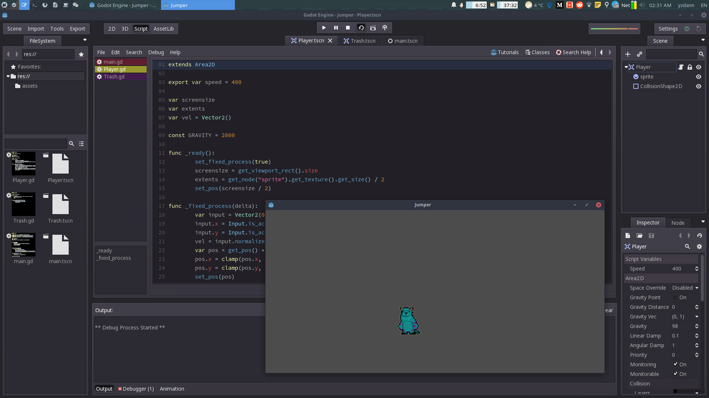
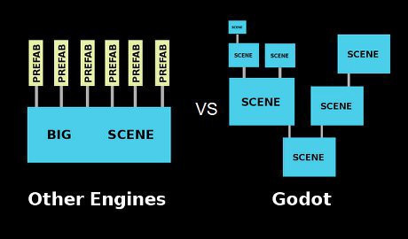
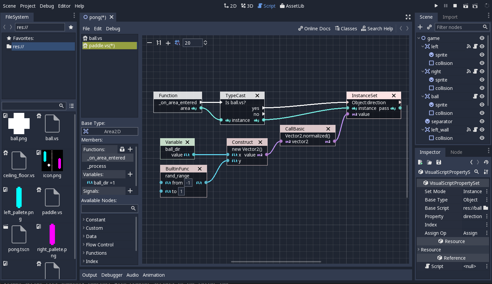
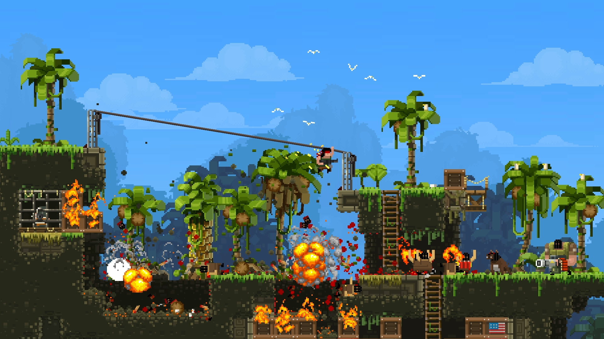
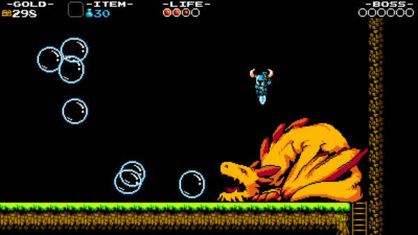
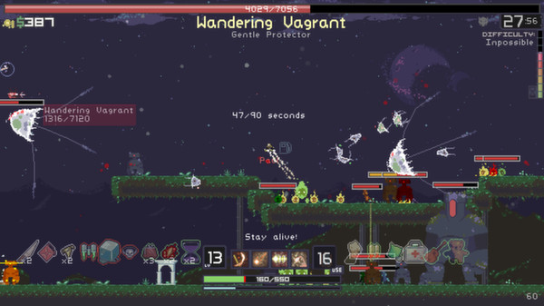

Introduction Godot Engine
Farzam Ramazi
Yazdan Mohammadi
IAUCTB
Dec 17, 2018

Overview
- . Game Engine!?
- . Demo
- . About Godot Engine
- . Pros and Cons
Game Engine
- . Set of common tools, so that users can focus on making games without having to reinvent the wheel.
- . Make development easier by taking care of all the low level details

3D Demo
2D Demo
About Godot
- . Godot Engine, the free and open source community-driven 2D and 3D game engine!
- . Cross platform: GNU/Linux, Mac, BSD, Windows,...
- . Exports avaliable for PC, Mobile, Web*, VR
- . Consoles Supported but you need obtain kit from manufacturers
- . MIT license
- . 18K STAR..3K FORK..753 CONTRIBUTORS on github
- . 8.8K$ a month on pateron
- . Latest stable version 3.0.6
- . Sponserd by Mozilla foundation and Microsoft for C#
- . It's only 16MB executable file
- . No installation
- . For mobile you need to download SDK and template
- . Support C# and MONO
Concept
- . Everything is a Node.
- . Name, properties, callback, extendable
- . A group of nodes arranged in a tree is called a Scene.
- . Godot uses simpler node trees instead
- . Entire game screen is a node tree

More
- . No need for other tools beyond used for content creation(art, assets, music etc.)
- . Architecture is built around concept of a tree of nested scenes
- . All files(scripts, graphical, assets) are saved as part of computer's file system rather than database this will make it much easier for teams
- . Scripting
- . Code faster with GDScript, VisualScript, ShaderScript
- . Script editor auto indentation, syntax highlighting and code completion
- . Also debugger
- . Rendering OpenGL
- . Plugins : github.com/Calinou/awesome-godot

Pros and Cons
- . Good choice for indie games
- . Because it's open source larger teams can modify and extend
- . Phaser
- . Unity
- . Unreal(epic game)
- . We have often said that beginners should start with 2D games, because working in 3D adds yet another layer of complexity. Once you have a strong handle on the 2D fundamentals, it will be much easier to make the step up to 3D
- . While Unity is technically free, it is commercial software, and you are required to pay for a license if your game makes a certain amount of money.
- . No enforced programming patterns MVC or ECS

30 USD

19 USD

17 USD
Made with <3 impress
Godot official docs and github
KidsCanCode.org